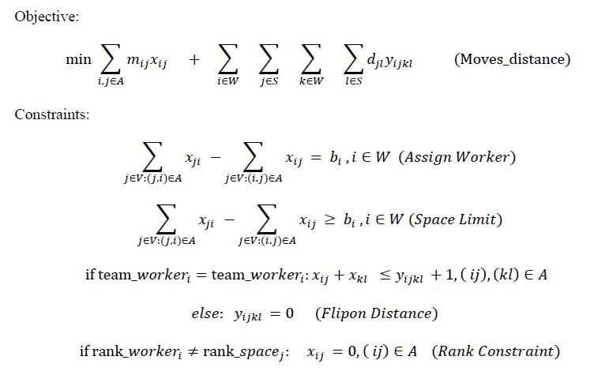

A portfolio website to showcase my projects and thoughts. All project repositories, including supporting code and documentation, may be found on my GitHub Portfolio.
I build and implement systems and models that solve problems and optimize business processes using descriptive, predictive and prescriptive analysis to drive strategic decisions. I value my abilities to listen, learn, and adapt more than anything. I hope that this website demonstrates my deep interest in data science and machine learning while emphasizing the importance of using data to make decisions. I welcome the opportunity to discuss with you personally how my skills and abilities can best serve you.

Developed a precise and accurate Random Forest predictive model that predicts FZG (Forschungsstelle fur Zahnrader und Getriebebau - gear test) Failure Load Stage. The model enables better, faster, cheaper product development for Afton's “Driveline” business unit. Worked with and presented the model to appropriate representatives while meeting the requested specs.
April, 2020
Federal Reserve Bank of Richmond Office Workspace Allocation

Built Python, Pyomo and GLPK network optimization model approach with binary variables and logical constraints to simulate reorganization of 1700 workspaces across 17 floors, while allocating for changing project teams and requirements. Worked collaboratively with the Federal Reserve Bank of Richmond IT Vice President (Christine Holzem) to collect data, consult and provide clearly written report.